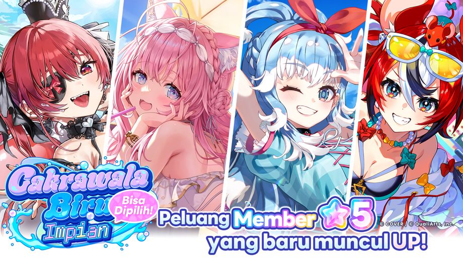
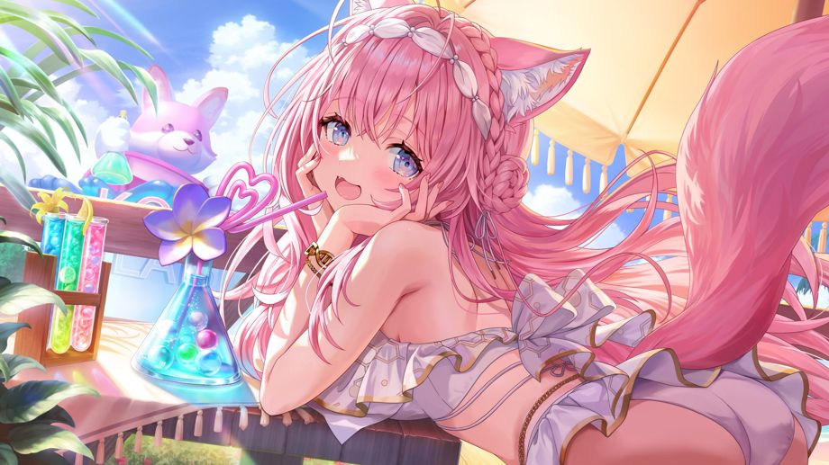
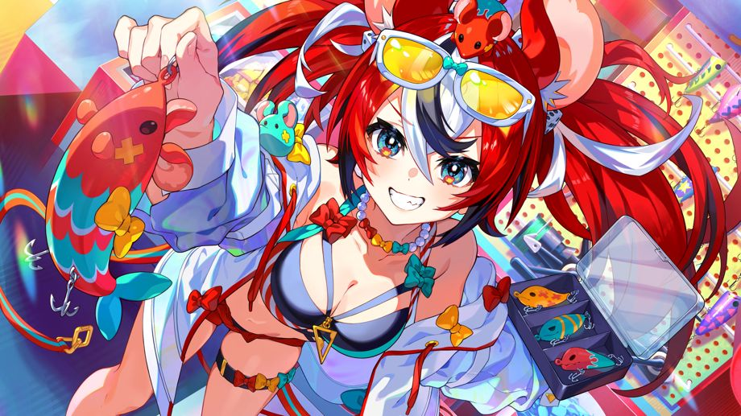

"Gacha Cakrawala Biru Impian" dimulai!
Selain itu, "Bisa Dipilih! Gacha Cakrawala Biru Impian" yang meningkatkan tingkat kemunculan Member yang dipilih juga akan diadakan bersamaan!
◆Periode Event
2026-09-29 11:00:00,2026-10-19 10:59:59
◆Gacha dengan Gacha Pt yang bisa dipakai
・Gacha Cakrawala Biru Impian
・Bisa Dipilih! Gacha Cakrawala Biru Impian
◆Member dengan Tingkat Kemunculan yang Ditingkatkan
・★5 Kuasai Meriam Air!♡ Houshou Marine

・★5 Lirikan Misteri Hakui Koyori

・★5 Raga Selaras Ombak Kobo Kanaeru

・★5 Ini Jagoan Utamaku! Hakos Baelz

Catatan Penting
・Konten dan periode event bisa bisa berubah sewaktu-waktu tanpa pemberitahuan terlebih dahulu.
・Untuk informasi penting mengenai Gacha ini, silakan periksa [Layar Gacha]→[Detail Gacha]→[Perhatian].
・Untuk detail mengenai konten dari gacha ini, silakan periksa di [Layar Gacha]→[Detail Gacha]→[Rasio penyediaan] pada tiap gacha.
・Akibat pengaruh kondisi jaringan atau faktor lainnya, dapat terjadi selisih waktu sekitar 1 detik pada waktu mulai dan selesai.